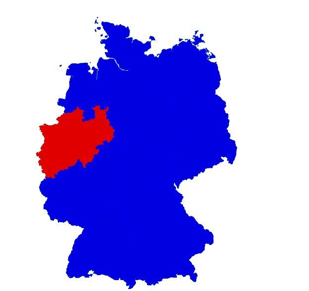

Introduction
The Problem

By Gregor Weckbecker
You don’t need a weatherman
To know which way the wind blows
– Bob Dylan
Use color maps:

window.onload = function () {
var canvas = document.getElementById("color-map");
var context = canvas.getContext("2d");
var rgb = new Image();
rgb.onload = function() {
context.drawImage(rgb, 0, 0);
};
rgb.src = "rgb.png";
var map = document.getElementById("map");
map.onmousemove = function(e) {
var x = e.pageX;
var y = e.pageY;
var data = context.getImageData(x, y, 1, 1).data;
if (data && data[0] && data[0] > 200) {
map.className = "highlight";
} else {
map.className = "";
}
};
> npm install node-canvas
function RangeEncodedArray(index, data, length) {
this.index = index;
this.data = data;
this.length = length;
}
RangeEncodedArray.prototype.get = function(i) {
// TODO: Handle borders
var center, lower = 0, upper = this.index.length;
while (true) {
if (lower === upper || lower + 1 === upper) {
return upper === i ? this.data.charAt(upper) : this.data.charAt(lower);
}
center = Math.floor((upper + lower) / 2);
if (this.index[center] < i) {
lower = center;
} else {
upper = center;
}
}
};
RangeEncodedArray.build = function(str) {
var length = str.length;
var index = [];
var data = '';
var currentChar = null;
for(var i = 0, c = str.charAt(0);
i < length;
i++, c = str.charAt(i)) {
if(currentChar !== c) {
index.push(i);
data += c;
currentChar = c;
}
}
return new RangeEncodedArray(index, data, length);
};
var Canvas = require('canvas');
var Image = Canvas.Image;
var fs = require('fs');
fs.readFile(cwd + '/' + names[index], function(err, data) {
var image = new Image();
image.src = data;
images.push(image);
});
for(i = 0; i < images.length; i++) {
image = images[i];
code = String.fromCharCode(65 + i);
mapping[code] = {
'image': image.id,
'code': code
};
canvas = new Canvas(image.image.width, image.image.height);
context = canvas.getContext('2d');
context.drawImage(image.image, 0, 0);
data = context.getImageData(0,0, image.image.width, image.image.height).data;
for(k = 0; k < image.image.height; k++) {
for(l = 0; l < image.image.width; l++) {
index = k * image.image.width + l;
if(data[(index) * 4 + 3] > 200) {
map[index] = code;
}
}
}
var str = map.join('');
var array = RangeEncodedArray.build(str);
var js = "var mapData = (" + Map.serialize(mapObj) + ");";
fs.writeFile(cwd + "/" + filename, js, function (err) {
..
});
var mapData = ({
"id":"germany",
"array": {
"length":384990,
"index":[0,132906,132907,133532, ..,356591],
"data":"0A0..0A0"},
"mapping":{"A": ..}
});
Size ≈ 8k
var array = mapData.array
..
this.onMouseMove = function(e) {
var x = Math.floor((e.pageX - offsetX) * scale);
var y = Math.floor((e.pageY - offsetY) * scale);
point = array.get(626 * y + x);
if (point !== lastPoint) {
if (point === '0') {
hideOverlay();
} else {
showOverlay(point);
}
}
};